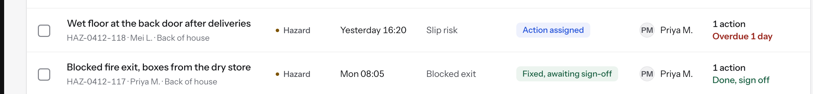
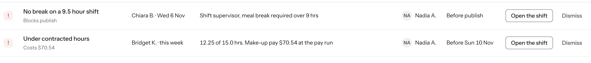
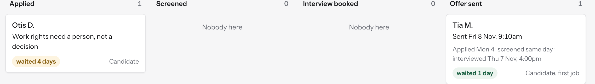

One design system, three products
The safety, workforce and hiring concepts are built on one token file and one component file, with gates that fail the build rather than warn. This page shows the files as they are, the gate that failed for real, and one component photographed on all three products.
The token file
assets/product/tokens.dtcg.json is the source, written in the W3C Design Tokens Community Group format. tools/build_tokens.py compiles it to the stylesheet the screens load, and the lint fails if the two drift. The values below are read from the compiled file when this page is built, so what you see is what the screens use. There is one mode: the DTCG resolver module is still a preview draft that says not to implement it, so this system does not pretend to have modes it cannot build.
Surfaces and ink
Status pairs
Roster states, the workforce product only
The type scale
Eight steps from a 14px base, the smallest 11px for badges and labels. A pixel font-size anywhere in a screen's style block or in the component file fails the lint, so nineteen sizes cannot creep back in.
| Token | Size | Sample |
|---|---|---|
| fs-0 | 11px | The manager classifies from the outcome |
| fs-1 | 12px | The manager classifies from the outcome |
| fs-2 | 13px | The manager classifies from the outcome |
| fs-3 | 14px | The manager classifies from the outcome |
| fs-4 | 15.5px | The manager classifies from the outcome |
| fs-5 | 18px | The manager classifies from the outcome |
| fs-6 | 26px | The manager classifies from the outcome |
| fs-7 | 34px | The manager classifies from the outcome |
The manifest an agent must search
assets/product/components.manifest.json lists every class the component file defines, 233 of them, generated from components.css so it cannot drift. AGENTS.md tells an agent to search it before writing a component; the lint fails on any p- class used in a screen that is neither in the manifest nor defined in that screen's own style block. Components were lifted into the shared file once a second screen needed them, which is how the drawer, the numbered step list, the comparison pair and the oversized search field arrived.
p-actions · p-alert · p-alert-danger · p-alert-info · p-alert-success · p-alert-warning · p-app · p-app-bar · p-appbar · p-avatar · p-avatar-open · p-avatar-sm · p-back · p-badge · p-badge-danger · p-badge-info · p-badge-neutral · p-badge-plain · p-badge-success · p-badge-type · p-badge-warning · p-bar · p-between · p-board · p-box · p-brand · p-brand-inline · p-brand-mark · p-breakdown · p-brk · p-btn · p-btn-block · p-btn-brand-quiet · p-btn-danger · p-btn-ghost · p-btn-lg · p-btn-primary · p-btn-secondary · p-btn-sm · p-caps · p-card · p-card-body · p-card-head · p-cell · p-chart · p-chat · p-check · p-chev · p-chip · p-choice · p-choices · p-clock · p-clock-body · p-clock-head · p-col · p-col-head · p-compare · p-consent · p-count · p-counter · p-counters · p-cover · p-crumbs · p-cta · p-datestrip · p-demand · p-diff · p-diff-cell · p-dot · p-drawer · p-drawer-body · p-drawer-foot · p-drawer-head · p-drawer-wrap · p-empty · p-error · p-field · p-fieldset · p-fig · p-fig-d · p-fig-l · p-fig-v · p-figs · p-filters · p-flag · p-floor · p-gap-2 · p-glyph · p-grid · p-grid-2 · p-grid-3 · p-grid-4 · p-grid-8-4 · p-grow · p-hint · p-home · p-ico · p-impact · p-input · p-kanban · p-kcard · p-kmeta · p-kv · p-lane · p-lane-head · p-ledge · p-legend · p-legendbar · p-link-ref · p-list · p-list-row · p-main · p-mb-3 · p-mb-4 · p-mb-5 · p-mdate · p-meta · p-mhead · p-modnav · p-mono · p-mrow · p-msg · p-mstat · p-mstat-l · p-mstat-v · p-mt-2 · p-mt-3 · p-mt-4 · p-mt-5 · p-muted · p-nav · p-nav-label · p-note-row · p-nowrap · p-num · p-overdue · p-page · p-page-fill · p-page-head · p-pager · p-pb · p-pd · p-person · p-ph · p-phone · p-pin · p-post · p-primary-cell · p-punch · p-quick · p-quick-add · p-rail · p-rail-group · p-rail-item · p-railed · p-rarea · p-rarea-sum · p-rc · p-record · p-record-head · p-record-id · p-rf · p-rgrid · p-rh · p-rhead · p-right · p-ring · p-rn · p-rname · p-roster · p-roster-grid · p-row · p-scope · p-screen · p-scrollx · p-search · p-search-lg · p-section · p-seg · p-select · p-sent · p-sevtabs · p-shell · p-shell-top · p-shift · p-shift-flag · p-sidebar · p-sidebar-foot · p-slot · p-slotday · p-slotrow · p-slots · p-spacer · p-stat · p-stat-accent · p-stat-delta · p-stat-label · p-stat-value · p-status · p-status-icons · p-stepper · p-steps · p-sub · p-swap · p-swap-body · p-switch · p-tabbar · p-table · p-table-foot · p-table-wrap · p-tabs · p-textarea · p-timeline · p-tl-item · p-tl-note · p-toast · p-togglerow · p-topbar · p-tri-head · p-triage · p-triage-panel · p-vcheck · p-w-100 · p-waited · p-weekpick · p-where · p-who · p-why · p-work · p-work-head · p-work-sub · p-wrap · p-zone
The gates, and the one that failed
| Gate | Command | Fails on |
|---|---|---|
| Tokens in step | tools/build_tokens.py --check | CSS out of date with the DTCG source |
| Contrast | tools/contrast_check.py | Any text pair under 4.5:1, any control border under 3:1 |
| Component registry | tools/lint_site.py | A `p-` class that is not declared anywhere |
| Site content | tools/lint_site.py | Blocked vendor names, wrong counts, broken local links, cropped artefacts, em dashes |
| Visual regression | tools/visual_check.py | A screen that has changed against its committed baseline |
| Side gutter | tools/check_layout.py | Any text under `main` within 16px of the window edge, or a page that scrolls sideways, at 390 and 1280 (pages are loaded in an iframe of that width, because headless Chrome will not lay out under about 500px) |
| Facts across surfaces | tools/check_facts.py | A hero number typed differently on the case, the home page, the Work page, the showcase, the CV or llms.txt; a Work headline that miscounts its cards; a stat-strip number missing from the case's facts.json |
| Safety facts | tools/check_safety_facts.py | A weekday that does not match its date in the safety screens, initials that do not match the name, a reference used for two records, counts that disagree between screens |
It caught a real failure while this layer was being written: an open shift is drawn as an outline, so the outline is the object and has to clear 3:1, which the first grey did not.
Two products on this site have already shipped a screen where the same record appeared in two states at once, and a reader spotted it before any check did. The three fact checkers exist because of that: they assert the screens against one data table each, and staleness is a content hash written at capture time, so they pass on a fresh clone as well as on the machine that captured them.
One component, three products
The same badge with a dot and a word, the same avatar and the same secondary button, photographed on the safety register, the workforce compliance list and the hiring pipeline. The row and the card are the same component family drawn for different jobs. Nothing here is a picture of a component; each crop is cut from the captured screen.

Safety · from register.png

Workforce · from compliance-list.png

Hiring · from pipeline.png